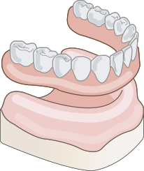
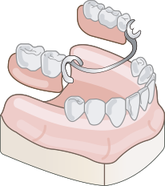

AIDEN DENTAL
전체틀니 및 부분 틀니, 임플란트 틀니 제작으로
씹는 맛을 되찾으세요.
| 임플란트 틀니 | 기존 틀니 | |
|---|---|---|
| 예시 |   | |
| 시술방법 | 약 2~4개의 임플란트 식립 후 고정장치로 연결 | 잇몸 위에 걸치는 방식으로 제작 |
| 씹는힘 | 자연치아의 약 80~90% 회복 | 자연치아의 약 30% 회복 |
| 고정력 | 고정되어 빠질 염려 없음 | 고정이 잘 안되어 쉽게 빠지거나 이물감이 있음 |